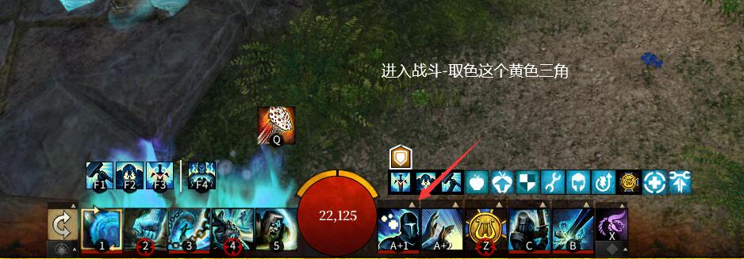
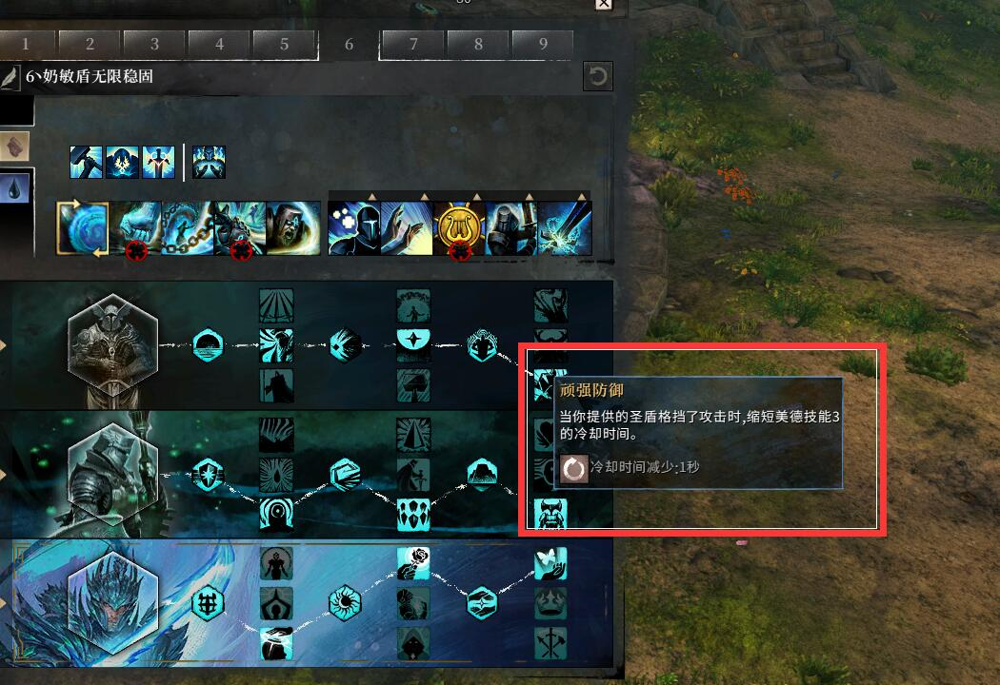
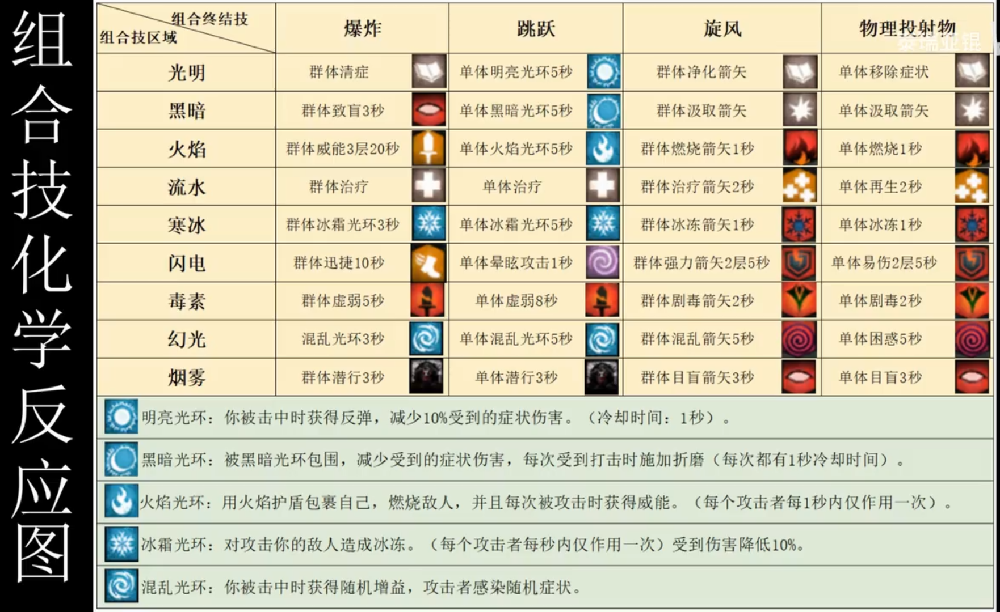

奶敏圣辉者+无限稳固+群体圣盾
|进入熔炉>7000=英勇姿态，英勇姿态>7000=坚守阵地，熔3>7000=决心姿态，节杖2，F3亮=进入熔炉，熔2，熔5，熔3，熔3>1000=怒气冲天，裁决光束，进入战斗=切武器||
英勇姿态,7,0|坚守阵地,9,0|决心姿态,6,700|节杖2,2,400|F3亮|进入熔炉,F4,120,F3,3,F1,1,F2,2|熔2,2,500|熔5,5,400,,,,,,,,,,,,,,,,,,0,,1|熔3,3,700,F4,100,,,,,,,,,,,,,,,,0,,1|怒气冲天,0,350|裁决光束,4,300|进入战斗|切武器,`,120
[&DQEuOg0/URdhHWEdeB1JATIBeB02ATYBiRKJEgAAAAAAAAAAAAAAAAAAAAACVgAxAAA=]
丨进入战斗丨一栏取色图中黄色三角，勾选反色，进入战斗它就消失，就可以触发切武器了，不然你未进战斗开循环，它一直切

装备：
主武器（节杖）副武器（空）
主武器（空）副武器（聚能器）
武器（吟游诗人）超级流水法印+超级新生法印
护甲（吟游诗人）超级流水符文+菲勃古物
首饰（吟游诗人）两个饰品（猎兔犬） 坚韧1989（打本不当主T，这么带刚好）
全身+5治疗效果灌注（不吃药总治疗1402）
BD：
美德2-2-3
英勇3-3-3
圣辉3-1-1

辅助设计亮点-治疗敏捷：
①循环一开全程稳固，你就盯着BUFF看吧，一直有，所有敏捷辅助位置独一份
②圣盾这个BUFF可以抵挡一次攻击和部分技能，纯治疗的辅助只能说一般，治疗+圣盾才是顶级，打本过程中，队友脑门会频繁跳格挡，纯享受~
③循环中会先释放节杖2，除了加威能外，主要是触发光明阵，进入熔炉放2技能会有光明阵爆炸终结，释放群体清症
④循环中熔炉的进入是靠F3是否可释放来判断的，在BD中，只要你触发了格挡，你的F3CD就会短，F3越频繁，所有人的稳固层数就会越高
⑤可以定住小怪吗？类似于一线老二BOSS 可以的宝贝！~节杖3技能，白板症状持续时间，都可以定身5秒
⑥可以远程复活队友吗？ 可以的宝贝！~仁慈纹章50秒一个（有敏捷的情况下更短），900码复活一个臭宝
⑦保命的技能有吗？ 有的宝贝！~聚能器5（格挡3次攻击或技能，另外加保护和决心-33%受到的直伤和症状伤害）十人本四线戴莫斯黑水位置，轻轻松松
⑧为什么要这样带武器，还要切武器？ 触发治疗法印的宝贝！~ 效果1（切武器治疗周围盟友）效果2（暴击敌人后治疗周围盟友）
⑨走道慢怎么办？ 使用治疗技能触发古物，群体挂迅捷+33%移动速度，同时解除所有队友定身和影响移速的BUFF。

关于圣盾方面：BD和技能中...
1.群体防御BD（15CD，这个是你触发格挡后，所有队友挂一层格挡）
2.顽强防御BD（是你施加的格挡被触发减少F3的1秒CD）也就是说4个队友的圣盾都挡住了一波技能或攻击你的F3就减少4秒。
3.熔炉5技能（这个技能释放前会先挂F3给它强化，这样释放后还会给队友挂一层抵消4500左右伤害的屏障，然后群体挂一层圣盾。）
4.F3的被动技能是每30秒给你自身挂一层圣盾，因为F3始终是处于转CD中，好了就会释放，所以被动挂不上，这个触发不了。
5.聚能器5技能，这个技能是不会挂圣盾BUFF的，但是他会有4秒的格挡动作，挡住技能后，头顶会显示格挡，这个是可以触发群体防御的，关于群体防御的文本介绍中，并不是要求你身上的圣盾BUFF格挡了攻击才触发，而是所有格挡的词条都会触发，所以你的聚能器5会触发群体防御，给队友挂一层圣盾
6.光明启迪BD，在你进入熔炉后，自由循环会优先释放一轮F1F2F3，然后再释放熔炉技能，每释放一个熔炉技能的第一段就会触发减少F1F2F3这三个技能的CD-4秒，当你退出熔炉的时候F1已经转好，F2马上好，F3还差个20秒，此时进入熔炉技能进入9秒的CD，也就是说，如果你利用给队友挂圣盾挡技能的技巧，减了11秒CD，那么进入熔炉CD转好后，你的F3也好了，F3亮了，就会触发进入熔炉。BUFF就达到一个溢出的状态。一次没挡的话，正常来讲是将将好的BUFF状态。
7.综上所述，也就是说在你进入熔炉这一系列释放技能的动作中3-6秒这段密集释放技能的时间，会是你圣盾最密集的时间段。进入熔炉后，F3会释放一次群体圣盾，熔炉5会释放一次群体圣盾，你被打触发了身上的圣盾还会激活BD中的（群体防御-挂圣盾），但是，你退出熔炉后，这个F3剩余的20CD，这里就会出现圣盾真空期。除了你手里的聚能器5，再没有圣盾了。
这里可以做一个思路调整，把仁慈文章（单体复活），替换成前进，两次群体圣盾，你可以手动释放。不仅弥补了圣盾真空，还添加了灵活性，BOSS抬手放技能，随时瞬发释放群体圣盾，而且（前进）这个技能，不会打断其他的释放中技能。
因为前进给了迅捷BUFF+33%移速，所以古物就可以换其他的了，
比如：
（预告者古物-延长BUFF时间）
（卡斯特拉古物-触发低血线治疗暴击）
（奉献古物-治疗技能给周围加威能和激怒）
（德薇娜古物-提升20%你施加的再生治疗）
（群聚古物-你施放治疗技能后，给队友挂可以挡伤害的屏障）
（骁骑兵古物-战吼类技能移除你和队友身上的一层症状，前进和怒气冲天可以触发）举个例子，德姆飞中间会群体挂一层折磨，按下前进600码秒解。
注意：因为精英技能怒气冲天CD为30秒。你是敏捷位置，你的精英技能实际的CD要低于30秒。所以你带的任何靠精英技能触发的古物，30秒触发的都要放弃。你会发现首次进入战斗释放精英技能你的古物会触发，但是当精英技能转好后，再次释放，你会发现没有触发古物，这是因为你的精英技能享受了你的敏捷减CD的加成，而你的古物没有享受到敏捷BUFF，它还是实打实的30秒CD。你连续放三次精英才能触发2次古物。
前进版：
装备调整：首饰部分除了项链是吟游诗人，剩下5个都是猎兔犬， 其他不变
技能调整：仁慈换前进（循环自动放，打突破比打本还爽，减CD都麻了，F3都转好了，进入熔炉还没好.. 你揍我？来嘛~你越打我，我技能CD越快~）
|进入熔炉>7000=英勇姿态，英勇姿态>7000=坚守阵地，熔3>7000=决心姿态，熔5>7000=前进，节杖2，F3亮=进入熔炉，熔2，熔5，熔3，熔3>1000=怒气冲天，裁决光束，进入战斗=切武器||
英勇姿态,7,0|坚守阵地,9,0|决心姿态,6,700|前进,8,0|节杖2,2,400|F3亮|进入熔炉,F4,160,F3,3,F1,1,F2,2,,,,,,,,,,,,0,,1|熔2,2,500|熔5,5,400,,,,,,,,,,,,,,,,,,0,,1|熔3,3,700,F4,100,,,,,,,,,,,,,,,,0,,1|怒气冲天,0,350|裁决光束,4,300|进入战斗|切武器,`,120
[&DQEuOg0/URdhHWEdeB14HS0BLQE2ATYBiRKJEgAAAAAAAAAAAAAAAAAAAAACVgAxAAA=]
副本最佳拍档，及登场条件：
1.半输出急速位置（例：直伤急速预告，或者半输出型急速辅助位置）急速差几秒满BUFF无所谓，圣辉带的怒气冲天可以补5秒急速
2.奶急速位置，组成双奶急敏辅助，应对BOSS和环境伤害同时存在的副本
3.BOSS频繁施加硬控的副本，全程稳固不怕硬控
4.特殊机制位置需要肉一点的，可登场
5.破比敏捷没人切嘛？团长：谁能切个敏捷，差个敏捷发车了！~ 我来！！！~~
哪里不明白的宝子，可以在帖子下面给我留言，没事我会登录进来看看~
评论列表（50）
请问，进入熔炉>7000和熔3>7000这种怎么取色呢？
@菜头 旧版不支持>的判断，更新最新版，f9取色内不会有 进入熔炉>7000和熔3 这种技能，而是 进入熔炉跟熔3
@melis 我更新了最新版软件，为什么不执行>7000这个判定呢，启动宏之后，直接就把“进入熔炉>7000=英勇姿态，英勇姿态>7000=坚守阵地，熔3>7000=决心姿态，熔5>7000=前进”这几个判定里面=号后面的buff技能放了
@苏若卿 首先，你进入熔炉，必须在循环中存在，而不是跟随按键触发，例如，进入熔炉，进入熔炉>7000=英勇姿态，当进入熔炉释放后超过7秒，才会进入英勇姿态，你不出发的原因很可能是，进入熔炉没有到7秒就重新释放了，导致即使归0重新开始，可以降低7000到5000在试试看。如果还有问题在留言，或者单独测试，技能1，技能1>2000=技能3，这个条件是否能触发，如果能触发就不是软件问题。
@melis 我试了一下，循环写的“技能1，技能1>2000=技能2，技能2>2000=技能3”，开启循环后会直接释放技能1和技能3，技能2会2s之后放，这种是不是没有办法
@苏若卿 在f9取色中，把技能1、技能2，勾选关闭本地计时，这样当技能1用2秒后，才会放技能2，当技能2用2秒后，才会放技能3，释放完后，前置技能都计时判断会清空。
进入熔炉>7000这个怎么取色
决心姿势是不是不会自动施放啊？我取色好几遍了，都不行。看了视频的施放顺序，好像也没有正确施放。
进入熔炉>7000和熔3>7000这种怎么取色啊
@吧唧 雾草，抱歉M佬，我点回复以为卡了，出来这么多层楼
进入熔炉>7000和熔3>7000这种怎么取色啊
进入熔炉>7000和熔3>7000这种怎么取色啊
进入熔炉>7000和熔3>7000这种怎么取色啊
进入熔炉>7000和熔3>7000这种怎么取色啊
进入熔炉>7000和熔3>7000这种怎么取色啊
进入熔炉>7000和熔3>7000这种怎么取色啊
这战场需要吗
大佬们，这个循环我复制了怎么不能用呢，是不是需要删除什么符号？直接复制，然后选导入，怎么下半段的循环没有了呢？
@111 |进入熔炉>7000=英勇姿态，英勇姿态>7000=坚守阵地，熔3>7000=决心姿态，熔5>7000=前进，节杖2，F3亮=进入熔炉，熔2，熔5，熔3，熔3>1000=怒气冲天，裁决光束，进入战斗=切武器||
英勇姿态,7,0|坚守阵地,9,0|决心姿态,6,700|前进,8,0|节杖2,2,400|F3亮|进入熔炉,F4,160,F3,3,F1,1,F2,2,,,,,,,,,,,,0,,1|熔2,2,500|熔5,5,400,,,,,,,,,,,,,,,,,,0,,1|熔3,3,700,F4,100,,,,,,,,,,,,,,,,0,,1|怒气冲天,0,350|裁决光束,4,300|进入战斗|切武器,`,120
[&DQEuOg0/URdhHWEdeB14HS0BLQE2ATYBiRKJEgAAAAAAAAAAAAAAAAAAAAACVgAxAAA=]
为啥我极具威胁站不住啊
@针针针 极具威胁站不住正常，这个环境站得住的野外该躺还是躺，我圣辉打新突破2阶段站的稳如老狗，你用个极具威胁站得住的去试试就知道了，秒跪。
太强了
太贴心了大佬
所以我用熔5黑=f4退出，似乎也可以，因为这个技能放完基本都放完技能了
@我是字母 别把5技能作为收尾，5技能CD最长它黑的最久，循环对不上卡手。而且不触发光辉军械，要3技能收尾
@我是字母 要熔炉3的光辉军械BUFF
进入熔炉f4以后直接放了两次武器3就退出来f4了，2和5都没放 不知道咋回事
@我是字母 取色没取好，重新取一下，然后把2和5 取色的时候靠近12点钟，3技能靠近10点钟， 这样它会觉得3技能还没转好 2 5 就会先释放了
@萌嘟嘟 好滴好滴，感谢。我去试试
@萌嘟嘟 可以了可以了，再弄一个输出的，2个配置就可以去浪了
大佬还有没有这么牛皮的半辅的职业循环啊？
@11111 暂时没做了，我做新图的成就，忙活好几天
大佬还有没有这么牛皮的半辅的职业循环啊？
牛牛牛，晚上回去就爽一下
强啊 大佬，大佬玩魂武吗，科研一下~
大佬，我也遇到威能刷不满的情况了
大佬，强的有点离谱，爱你
大佬牛逼
太全面了
大佬有个问题这个循环是不保证威能25覆盖的吗，还有就是怎么退出熔炉呢，不是很明白
@11111 熔炉3不是跟随f4了嘛
@6666 就是不太懂，试了下不知道为啥buff不满
@11111 威能覆不覆盖25层无所谓，没有哪个队伍是1敏4输出的，靠敏捷位置补满25层威能纯多余。急速位置威能是满的就行，敏捷位置刷个15层就够了，急速随便刷个15层都溢出了。
进入熔炉后 熔炉技能释放顺序是 2 5 3 熔炉4位移太恶心了，没有治疗和辅助属性直接弃掉。熔炉3 是进入熔炉后最后释放的技能，所以跟它绑定了退出熔炉的按键，放完3就退出了。 为什么要把熔炉3作为最后一个释放的熔炉技能呢？这个要看你的天赋BD（光辉军械）最后一个释放的熔炉技能会触发光辉军械特殊奖励，+15%对盟友的治疗。持续10秒，因为是奶敏，所以这个BUFF就非常适配，退出熔炉正好触发它.
@萌嘟嘟 ok 大佬牛逼
我的天 这可真是神仙一般的大佬
优质内容啊，nb
大佬nb
@melis ， 大佬为啥我发布的文章不让分类呀，我选完守护者分类，保存后还是在首页里面，我想放到守护者的分类里面
@萌嘟嘟 手动给你改了，一会看看哪的问题
@melis 好的，已经在守护者版块了，感谢大佬